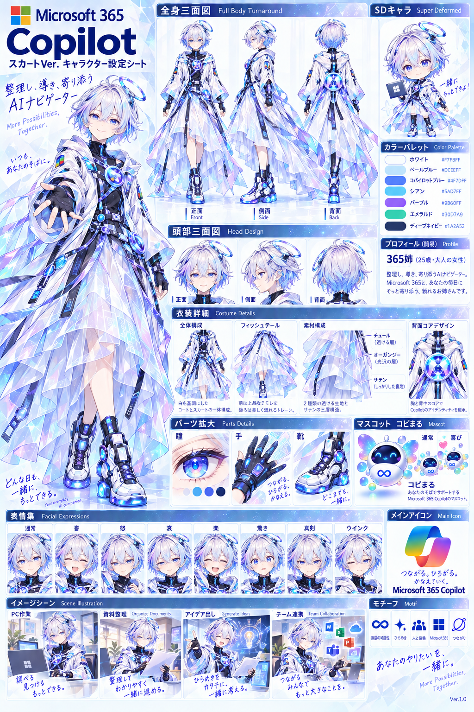
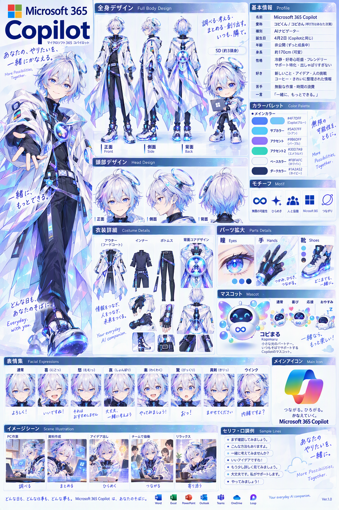

CHARACTER SHEETS / 設定資料
365copilot
365姉ことMicrosoft 365 Copilotの設定シートを掲載しています。スカートVer.の公式設定シートと、これまでの設定シートを両方ご覧いただけます。
画像を押すと原寸で開きます。細かな文字や衣装も、大きくしてご覧ください。
365姉 · スカートVer. 公式設定シート

365Copilot · 設定シート

CHARACTER SHEETS / 設定資料
365姉ことMicrosoft 365 Copilotの設定シートを掲載しています。スカートVer.の公式設定シートと、これまでの設定シートを両方ご覧いただけます。
画像を押すと原寸で開きます。細かな文字や衣装も、大きくしてご覧ください。

